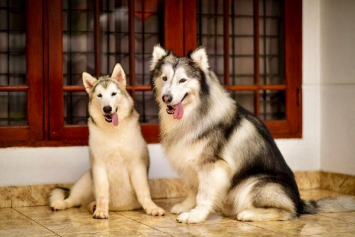

Perbandingan Alaskan Malamute dengan Siberian Husky

Perbandingan Hewan
Siberian Husky VS Alaskan Malamute
Asal
Berat (Jantan / Betina)
Umur
Tinggi (Jantan / Betina)
Siberian Husky
Siberia
45lbs-60lbs / 35lbs–50lbs
10-14 thn
21inc-24inc / 20inc-22inc
Alaskan Malamute
Alaska
85lbs / 75lbs
10-12 thn
25inc / 23inc